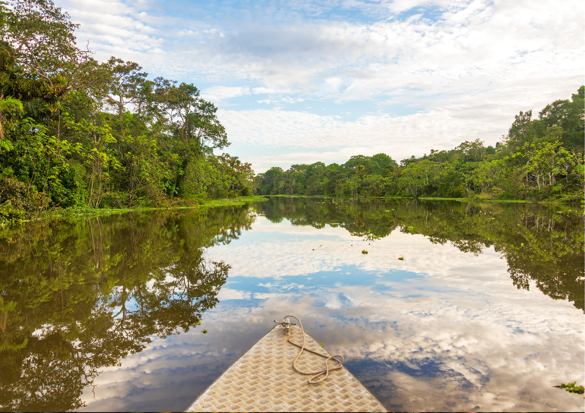
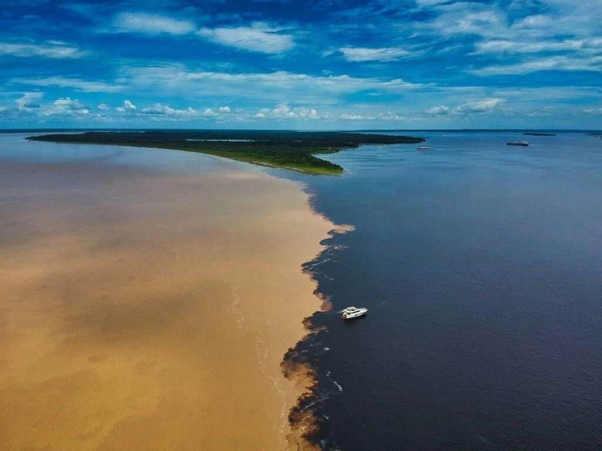
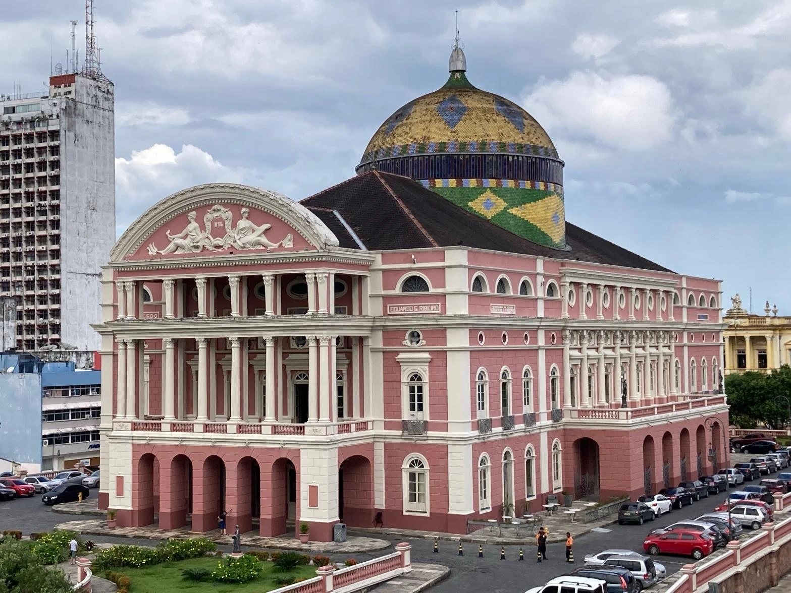
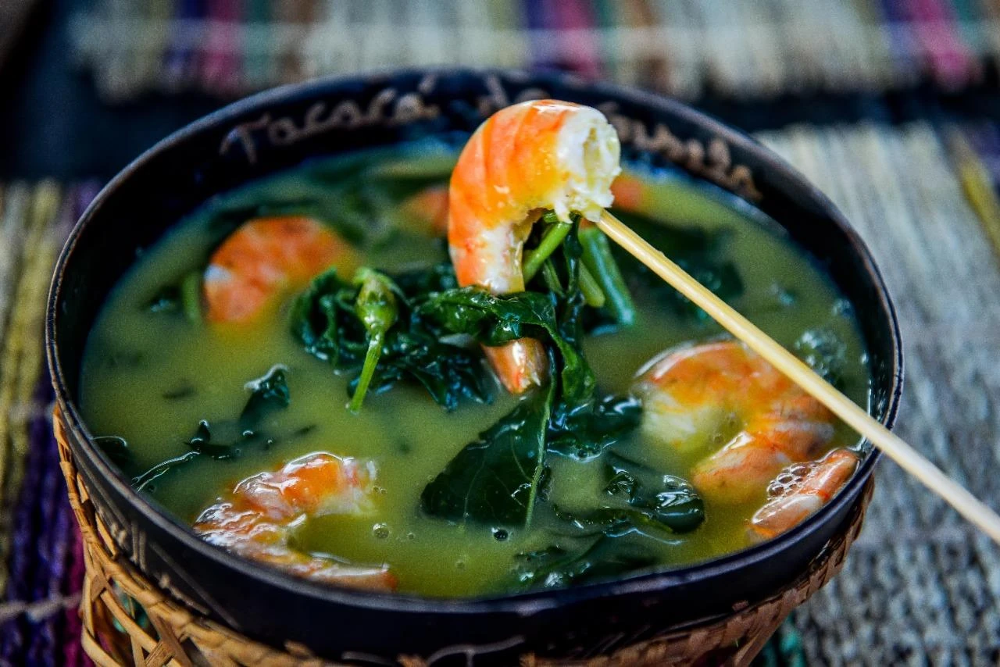
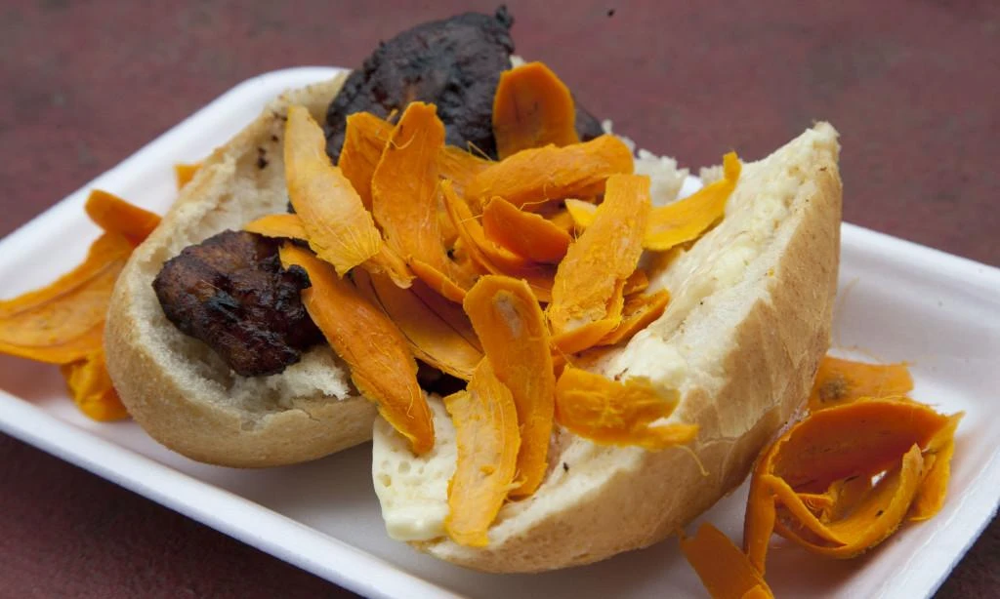

Capital
Manaus
Conheça destinos, culturas, sabores e paisagens de todas as regiões
brasileiras.
Destinos, culturas e paisagens
incríveis te esperam.
O Amazonas é o maior estado do Brasil em extensão territorial e está localizado na Região Norte. Conhecido mundialmente por abrigar grande parte da Floresta Amazônica, o estado possui uma das maiores biodiversidades do planeta. Seus rios, florestas e reservas naturais atraem turistas interessados em ecoturismo, aventura e contato com a natureza. Além disso, o Amazonas possui uma rica herança cultural marcada pela influência indígena e pelas tradições amazônicas.

Manaus
Aproximadamente 1.559.168 km²
Cerca de 4,3 milhões de habitantes
Norte

O Encontro das Águas é um dos fenômenos naturais mais famosos do Brasil. Nele, as águas escuras do Rio Negro encontram as águas barrentas do Rio Solimões, correndo lado a lado por vários quilômetros sem se misturar imediatamente.

O Teatro Amazonas é um dos maiores símbolos do estado. Inaugurado em 1896 durante o ciclo da borracha, destaca-se por sua arquitetura imponente e importância histórica e cultural.

O Parque Nacional de Anavilhanas abriga um dos maiores arquipélagos fluviais do mundo. O local oferece passeios de barco, observação da fauna e experiências únicas na Floresta Amazônica.

O Tacacá é preparado com tucupi, goma de mandioca, camarão seco e jambu. É um dos pratos mais tradicionais da culinária amazônica.

O tambaqui é um dos peixes mais apreciados da região. Geralmente assado na brasa, possui sabor marcante e é servido com acompanhamentos típicos amazônicos.

Muito popular em Manaus, o X-Caboquinho é um sanduíche preparado com pão francês, banana frita, queijo coalho e tucumã, fruto típico da Amazônia.
O Amazonas possui clima equatorial, com temperaturas elevadas e alta umidade durante todo o ano. Recomenda-se usar roupas leves, protetor solar e repelente.
O Amazonas possui clima equatorial, com temperaturas elevadas e alta umidade durante todo o ano. Recomenda-se usar roupas leves, protetor solar e repelente.
Manaus é a principal porta de entrada para o turismo no estado. Para experiências mais ligadas à natureza, vale visitar a região de Anavilhanas, áreas de floresta e comunidades ribeirinhas próximas aos grandes rios amazônicos.
Manaus é a principal porta de entrada para o turismo no estado. Para experiências mais ligadas à natureza, vale visitar a região de Anavilhanas, áreas de floresta e comunidades ribeirinhas próximas aos grandes rios amazônicos.
A culinária amazonense é rica em peixes de água doce, frutas exóticas e ingredientes típicos da Amazônia. Experimentar pratos com tucumã, tucupi e tambaqui é uma das melhores formas de conhecer a cultura local.
A culinária amazonense é rica em peixes de água doce, frutas exóticas e ingredientes típicos da Amazônia. Experimentar pratos com tucumã, tucupi e tambaqui é uma das melhores formas de conhecer a cultura local.